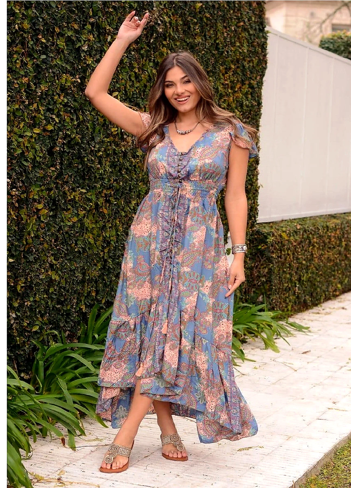
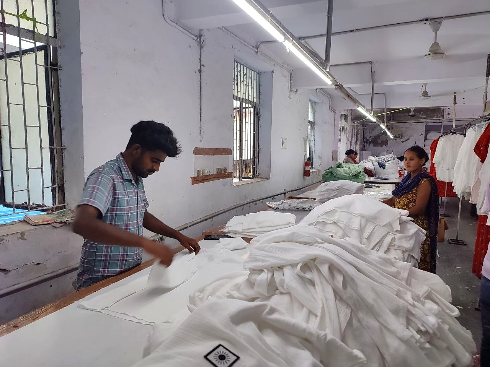
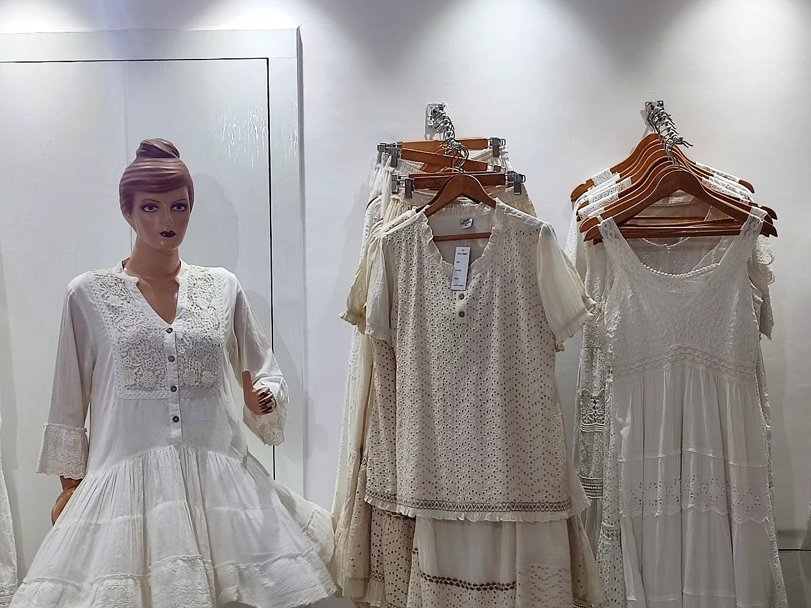

Dresses & resort wear
MANISHA OVERSEAS / EST. 1998 / NOIDA, INDIA
DIRECT MANUFACTURER FROM INDIA
Cotton.
Schiffli.
Crafted for
the World.
Manufacturer & exporter of premium women's western wear — crafted in cotton, Schiffli, embroidery, eyelet and printed fabrics for global wholesale buyers.
NOIDA, INDIA · GLOBAL WHOLESALE PARTNERSHIPS Follow the thread ↓
01 / OUR PHILOSOPHY
Not simply garments.
Stories made in fabric.
From the first sketch to the final stitch, we bring cotton, Schiffli, embroidery and contemporary silhouettes together for brands around the world.
Discover our story ↗
♧Direct ManufacturerOwn Manufacturing Unit — No Middleman
✺27+ Years of ExperienceIn Apparel Manufacturing & Exports
♧Women's Western WearDresses, Tops, Sets, Resort Wear
❀Schiffli & Embroidery SpecialistCutwork, Eyelet & Detailed Craft
◎Exporting WorldwideUSA, Canada, Europe, Latin America & More
THE LATEST PHOTO EDIT
Real pieces.
A fresh perspective.
Explore selected looks from our latest supplied photographs. See the details and share a reference with your next collection brief.
View the complete photo edit ↗
THE MANISHA ATELIER / NOIDA, INDIA
A garment begins with a vision.
From silhouette and sampling to careful production, our work brings together fabric knowledge, original design references and the people who make each piece possible.


OUR COLLECTIONS
Contemporary
Women's Wear
Versatile, breathable and trend-driven collections in cotton, Schiffli, embroidered and printed fabrics.
View All Collections →


A MATERIAL-TO-MARKET STORY / MANISHA OVERSEAS
One thread.
Endless possibility.
Follow a simple thread from cotton fibre to the finished collection, then across borders to a buyer’s showroom. An illustrated journey of the people, materials and expertise behind apparel.
01 / The beginning
Cotton becomes a thread.
Light, natural fibres come together to suggest the first delicate strand. The journey begins with the material itself.
02 / The fabric
Spun. Woven. Ready.
Yarn is formed and threads cross into cloth. Rotating spools and a weaving shuttle trace the rhythm of textile making.

03 / Colour & form
Colour meets the cut.
A sweep of dye and a careful cut shape the fabric story. The original photograph shows fabric handling inside our workroom.

04 / The workroom
Made with purpose.
From sampling to stitching and garment review, our Noida production team helps bring the finished collection to life.
05 / Beyond borders
Ready for the world.
Finished garments are prepared for international buyers. Each shipment moves a collection closer to its next destination.

Style 4638 / buyer presentation
06 / The destination
A place in the showroom.
Where a design meets its audience. We work with brands and wholesale partners to develop the next collection.
FROM YOUR BRIEF TO A BUYER’S COLLECTION
Start a wholesale enquiry Your vision. Our craft.
Tell us the garment, fabric and quantity you have in mind. We’ll help you explore the next step with the manufacturing team.
Illustrations of cotton, spinning, colour treatment and shipping are conceptual. Workroom and garment photographs are original Manisha Overseas images; not every illustrated upstream stage represents an on-site factory operation.
THE MANUFACTURING JOURNEY
From Fabric
to Finished Apparel
Explore the stages involved in developing and producing women's apparel for wholesale buyers.
Explore Manufacturing →



CRAFT & DETAIL
Schiffli.
Made to be noticed.
Explore eyelet, cutwork and embroidered cotton fabrics for distinctive dresses, tops and coordinated collections.
Explore Schiffli Styles →A MANUFACTURING BUSINESS WITH A WIDER REACH
From Noida
to buyer markets.
Our business history includes market work across Canada, the United States, Brazil, Spain, Hungary, Russia, Mauritius and the UAE.
Explore global reach ↗CANADAUNITED STATESBRAZILSPAIN / BARCELONAHUNGARYRUSSIAMAURITIUSUAE / DUBAI
LET'S BUILD YOUR NEXT COLLECTION